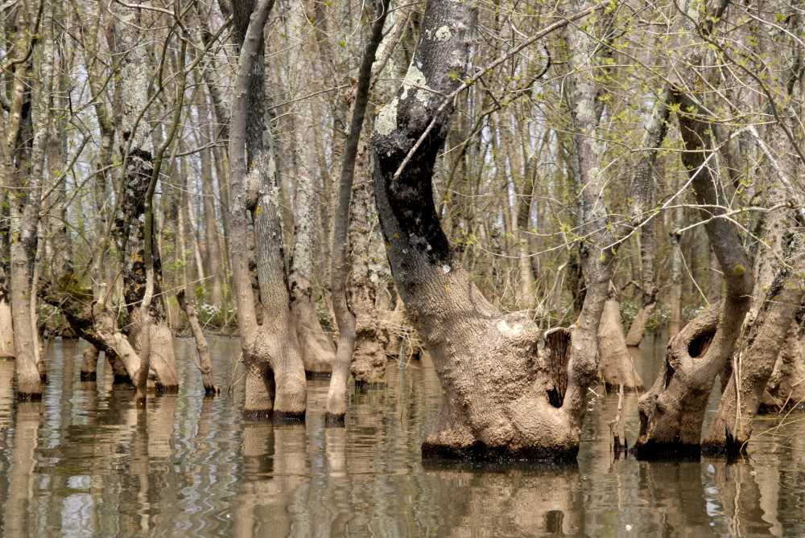
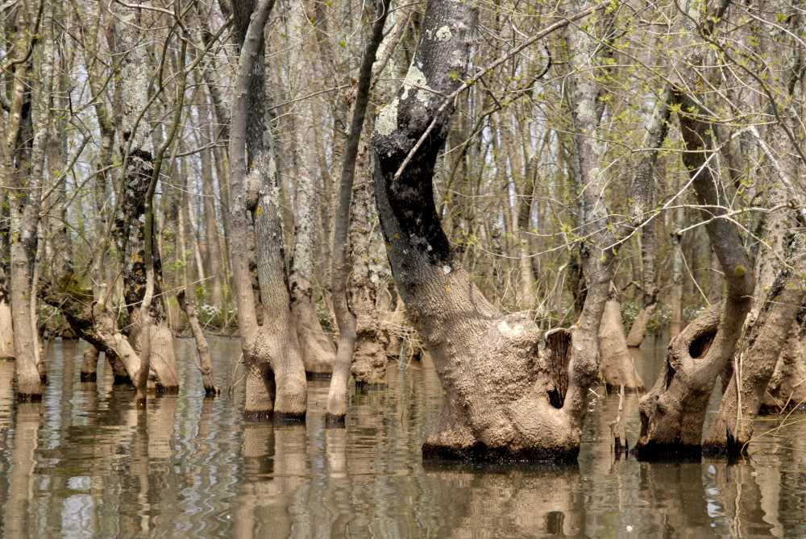

1,562 hektarlık bir alanı kapsayan Acarlar Gölü, Sakarya’nın önemli turizm merkezlerindendir. Acarlar Gölü Longoz Ormanı ise birinci derece doğal sit alanıdır. Koruma bölgesi içinde bulunan Acarlar Longozu, yaz aylarında kurumakta kışın ise su birikintisi ile oluşmaktadır. Longozun yüzölçümü 1.562 hektar olup, derinliği 1,5 metreye kadar çıkmaktadır. Yazın suları çekilen longozun toprakları köylüler tarafından tarım arazisi olarak kullanılmaktadır. Longozun çevresi bütünüyle dişbudak ormanlarıyla çevrilidir ve bu ağaçlar yer yer gölün bataklık kesimlerine sokulmaktadır.
 

Buralarda sülün, çulluk ve yaban ördeği gibi hayvanlar yaşamakta ve tatlı su balığı avcılığı yapılmaktadır. Longozdan çıkan balık türleri; yayın, kızıl kanat, sazan, turna, oklama ve bunların dışında birçok balık çeşidi bulunmaktadır. Acarlar Longozu 2300 civarında bitki türüne de ev sahipliği yapmaktadır. Su menekşesi, su lalesi ve çeşitli renkte nilüferler bunlardan bazılarıdır. Longozda ayrıca tekne ve su bisikleti turları yapılmaktadır.
KONUM İÇİN TIKLASakarya'nın Kocaali İlçesi'nde yer alan Maden Deresi ve Şelalesi doğa severler için güzel bir alternatiftir. Derenin sesini dinleyerek, yeşile bürünmüş bir çevrede yürüyüşler yapmak ve güzel bir kır sofrası kurmak için ideal bir yerdir. Bölgede bulunan mesire alanları, alabalık tesisleri ve balık restoranlarını da deneyimleyebilirsiniz. Mesire alanlarına giriş ücretlidir.


Davlumbaz Yaylası, Sülüklü Göl'ün batısında yer alır. Doğasıyla Sülüklü Göl'ü aratmayan yayla Sakarya'nın en güzel yerlerinden biridir. Yöre halkı tarafından Davlumbaz olarak isimlendirilen bu eşsiz güzellikteki yayla, Sakarya’nın görülmesi gereken alanlardan biridir.

Müze binası, bahçesi ile birlikte bin 290 metrekarelik bir alan üzerine kurulmuştur. 1910-1915 yılları arasında dönemin Askerlik Şubesi Başkanı Binbaşı Baha Bey tarafından zemin katla birlikte üç katlı olarak yaptırılan konut, daha sonra Atatürk’ün yakın arkadaşı ve milletvekili Hasan Cavit Bey tarafından satın alınmıştır. 17 Haziran 1922 tarihinde Mustafa Kemal Atatürk’ün annesi ile buluştuğu ve üç gün konakladıkları bu ev, 1967 yılında meydana gelen depremde büyük ölçüde hasar görmüştür. 1983 yılında sivil mimarlık örneği olarak tescil edilen konut, Bakanlığımızca kamulaştırılıp, dış görünümü aslına uygun bir şekilde, içte ise tamamen değişikliğe uğratılarak betonarme olarak yeniden inşa edilmiştir.
Sakarya Müzesi ilk defa 12Ocak 1989 tarihinde, İl Kültür Müdürlüğü bünyesinde büro hizmetlerine başlamış, 7 Mart 1989 tarihinde şimdiki yerine taşınmıştır. Müze, il sınırları içerisinde bulunan arkeolojik ve etnografik eserleri toplayarak yapılan teşhir düzenlemesi sonrasında, 21 Haziran 1993 tarihinde halkın ziyaretine açılmıştır.
Müzenin bahçesinde, Sakarya ili sınırları içinde bulunan Roma ve Bizans dönemlerine ait mimari parçalar, mezar taşları, sunaklar, yazılı taşlar, ostotek, pişmiş toprak erzak küpü ve sütun kaideleri sergilenmektedir. Müzenin sergi salonunda tarih öncesi çağlar, Roma ve Bizans dönemlerine arkeolojik eserler ile Osmanlı ve Cumhuriyet dönemlerine ait etnografik eserler sergilenmektedir. Arkeolojik eserler arasında yassı el baltaları, pişmiş toprak kaplar, koku ve gözyaşı şişeleri, madeni ve cam eserler yer almaktadır. Etnografik eserler arasında Ulu Önder Atatürk’ün kullandığı eşyalar ile Osmanlı ve Cumhuriyet dönemlerine ait ateşli ve kesici silahlar, bakır kaplar, mühürler ve el işlemeleri teşhir edilmektedir.